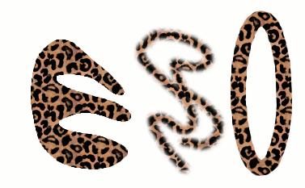
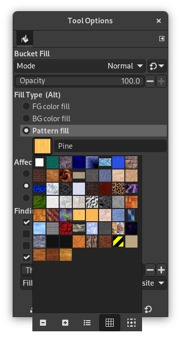

Uma textura é uma imagem, geralmente pequena, utilizada para preencher regiões ou fundos com ladrilhos, isto é, pela colocação de cópias da textura lado a lado, como ladrihos de cerâmica. Se diz que uma textura é encaixável ouladrilhável se cópias da mesma podem ser unidas da esquerda para a direita e de cima para baixo sem criar emendas óbvias. Nem todas as texturas úteis são ladrilháveis, mas os padrões ladrilháveis são mais bonitos para muitas finalidades. (Um padrão, por sinal, é a mesma coisa que uma textura.)
Figura 7.26. Uso de texturas

Três maneiras de usar a textura “Leopard”: preenchimento de uma seleção, pintando com a ferramenta Clone, e contornando uma seleção com a textura.
No GIMP, existem três principais usos para as texturas:
-
Com a ferramenta Preenchimento, você pode optar por preencher uma região com uma textura em vez de uma cor sólida.
Figura 7.27. The checked box for using a pattern

A caixa de opção para preenchimento com textura está marcada, e um clique na textura vai exibir todas as texturas disponíveis no modo de tabela.
-
Com a ferramenta Clonar, você pode pintar usando uma textura, com uma ampla variedade de pincéis.
-
Quando você contorna um caminho ou seleção, você pode fazer isso com uma textura em vez de uma cor sólida. Você também pode usar a ferramenta “Clonar” como sua escolha se você contornar a seleção usando uma ferramenta de pintura.
![[Dica]](images/tip.png)
|
Dica |
|---|---|
|
Nota: As texturas não precisam ser opacas. Se você preencheu ou pintou usando uma textura com áreas translúcidas ou transparentes, então o conteúdo anterior daquela área irá aparecer por trás dele. Esta é uma das muitas maneiras de fazer “sobreposições” no GIMP. |
Quando você instalar o GIMP, vem instaladas algumas dezenas de texturas que que dão a impressão de ter sido escolhidas mais ou menos ao acaso. Em geral, também são muito pequenas para o tamanho das imagens que temos hoje em dia. Isso porque algumas delas remontam ao início do GIMP, quando a capacidade dos computadores, e das imagens que eram criadas no dia a dia, eram muito menores do que hoje. Você também pode adicionar novas texturas, tanto aquelas que você mesmo cria, como texturas que você escolha baixar da Internet.
Textura atual do GIMP, usada na maioria das operações relacionadas a texturas, é mostrada na área de “Pincéis, texturas e degradês ativos” da caixa de ferramentas, se essa visualização estiver habilitada em Editar->Preferências, guia “Caixa de ferramentas”. Ao clicar no símbolo da textura, o diálogo de Texturas é apresentado, que permite que você selecione uma textura diferente. Você também pode acessar a caixa de diálogo Texturas pelo menu, ou encaixá-lo para que ela esteja presente o tempo todo.
Para adicionar uma nova textura à coleção, de modo que ela apareça na caixa de diálogo de Texturas, você precisa salvá-la em um formato que o GIMP possa usar, em uma pasta incluída no caminho padrão de texturas do GIMP (veja editar->Preferências, guia Pastas->Texturas). Existem diversos formatos de arquivo que você pode usar para as texturas:
- PAT
-
O formato
.paté usado para texturas padrões que foram criadas especificamente para o GIMP. Você pode converter qualquer imagem em um arquivo.patabrindo-o no GIMP e depois exporta-lo usando um nome de arquivo que termina em.pat.![[Cuidado]](images/caution.png)
Cuidado Não confunda arquivos
.patgerados pelo GIMP com arquivos criados por outros programas (por exemplo, o Photoshop) – A extensão.paté apenas uma parte de um nome de arquivo, que pôde ser escolhida arbitrariamente.(Entretanto, o GIMP suporta os arquivos
.patdo Photoshop até uma determinada versão.) - PNG, JPEG, BMP, GIF, TIFF
-
Desde o GIMP 2.2 você pode usar arquivos
.png,.jpg,.bmp,.gif, ou.tiffcomo texturas.
To make a pattern available, you place it in one of the folders in GIMP's
pattern search path. By default, the pattern search path includes two
folders, the system patterns folder, which you should
not use or alter, and the patterns
folder inside your personal GIMP directory. You can add new folders to the
pattern search path using the
Pattern Folders
page of the Preferences dialog. Any PAT file (or any of the
other acceptable formats) included in a folder in the pattern search path
will show up in the Patterns dialog the next time you start GIMP.
![[Nota]](images/note.png)
|
Nota |
|---|---|
|
Você pode adicionar um novo padrão rapidamente como faz para pincéis. Veja Seção 5.4, “Criando um pincel rapidamente”. |
There are countless ways of creating interesting pattern images in GIMP, using the wide variety of available tools and filters — particularly the rendering filters. You can find tutorials for this in many locations, including the GIMP home page [GIMP]. Some of the filters have options that allows you to make their results tileable. Also, see Seção 3.13, “Desfoque de Mosaico”, this filter allows you to blend the edges of an image in order to make it more smoothly tileable.